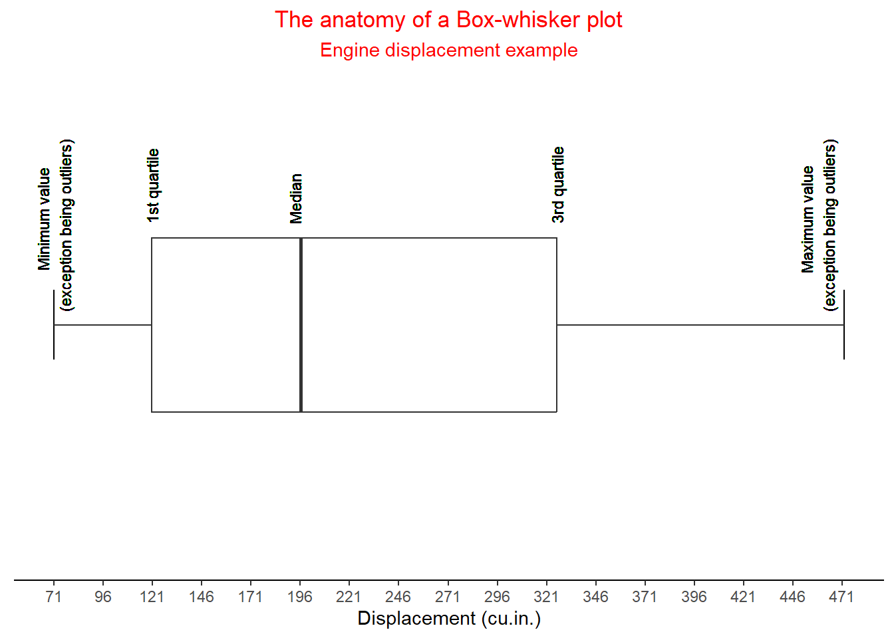
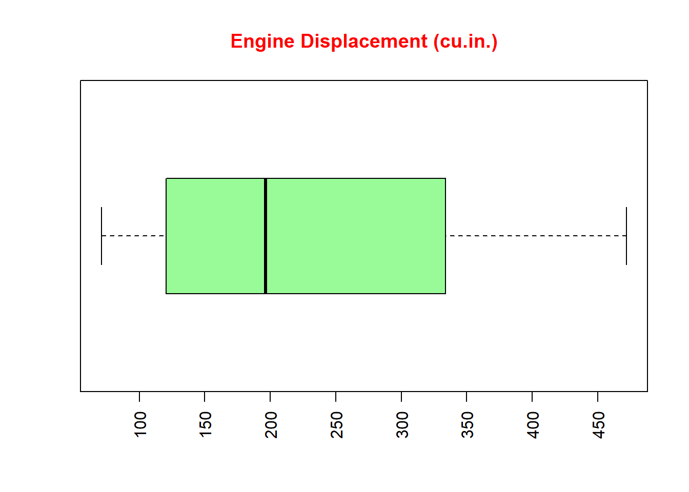
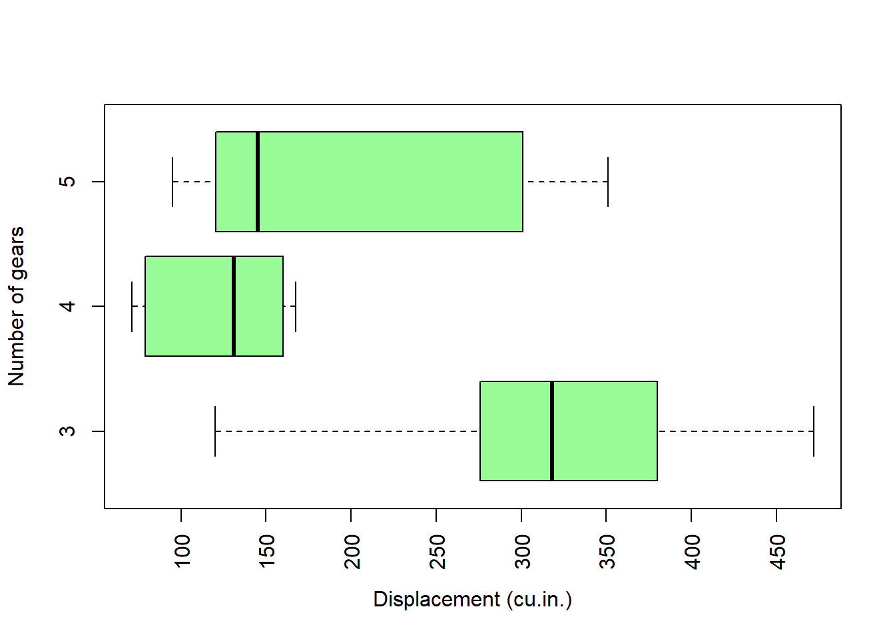
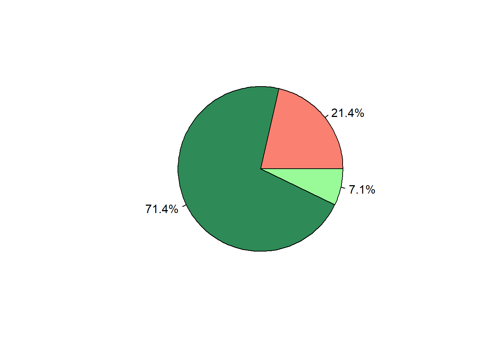
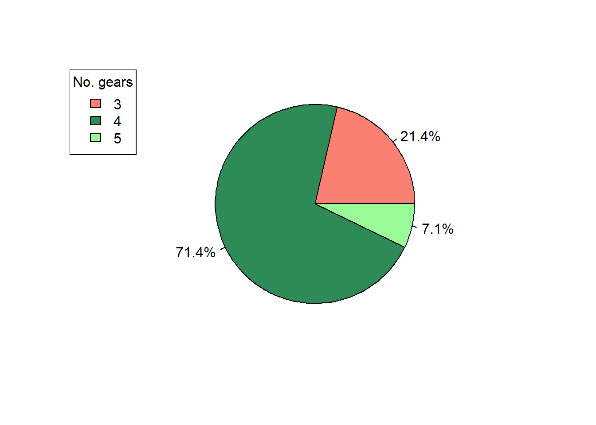
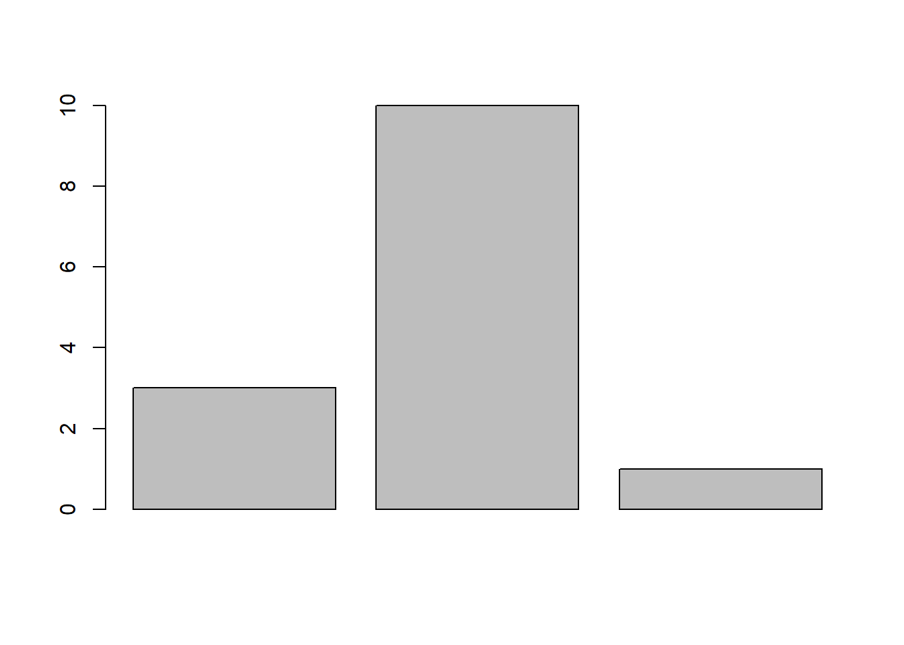
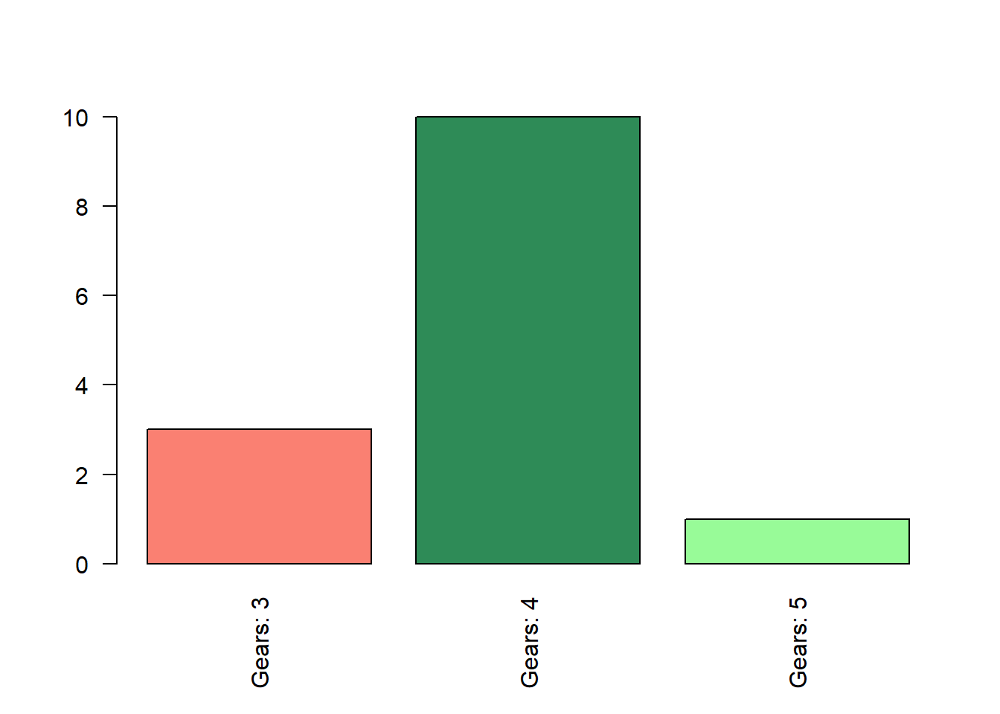
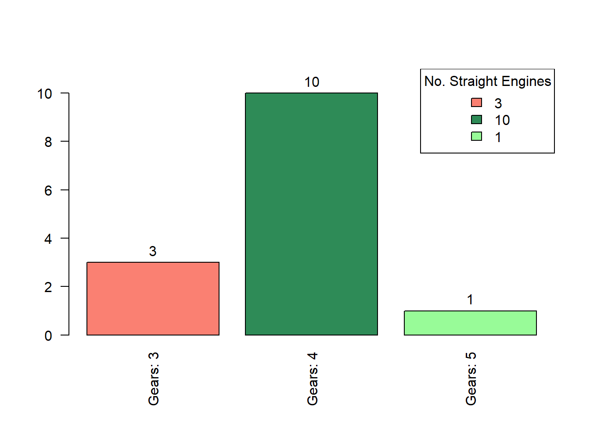

In the previous section, using R as a Calculator, introduced summary statistics in R. The outputs of the summary(...) function in R provides readily useful data insights including the:
Minimum value
Maximum value
Average value (arithmetic mean)
Median value (middle)
When dealing with numerical data, it also gives insights regarding quartile breaks.
The function behaves differently when processing non-numeric data, where it will return metrics concerning the frequency of occurrences, field length and class. For now, let’s focus on unpacking the numerical qualities.
1 The purpose of quantification
According to Richard Harris and Claire Jarvis, “data collection and analysis are central to the functioning of contemporary society…data handling of statistics is a necessary skill to social and scientific debate” (Harris and Jarvis 2014). Once data has been gathered, the next task is to make sense of it. A simple example could be: having just finished asking 100 people what their favourite colour is, how would you know which colour is most popular?
Statistics is derived from the Latin word ‘Statisticum’ that translates to ‘of the government’ or ‘of the state’. Therefore, the study of statistics literally means the study of the state, or to analyse something to do with the state. In the simple example given above, the state is the 100 surveyed people. The mission becomes to analyse the 100 people.
2 Geographic Data Frames (GDF)
A data frame is a the next step up from a matrix. While a matrix contains a single class of data (i.e. purely numeric), a data frame can contain difference classes of data variable. An example of a data frame is noted below along with a test of the object’s class. The data shows the effect of vitamin C on the growth rate of teeth for the first 6 rows of 60 observations.
A geographic data frame differs from a conventional data frame as it includes geographic data such as geometries, longitude, and latitude. Geographic data fields, make it possible to spatialise and map your data.
Class in data objects
Class is a shortened handle for classification. R is able to identify a range of different classes either via the summary(...) or class(...) functions. Knowing the class of your data will help you to select the most appropriate instruments for analysis.
3 Numerical Summaries
3.1 Minimum and Maximum values
The minimum (\(\wedge\)) and maximum values (\(\vee\))are self-explanatory. They represent the lowest and highest value present in your data vector/variable. These can be found easily in R using the min(...) and max(...) functions. For example, using the mtcars data set, we can find the minimum horsepower (hp) for the featured 1970s cars using the following lines of code:
Code
min(mtcars$hp)
[1] 52
The maximum horsepower is quickly retrieved using the following:
Code
max(mtcars$hp)
[1] 335
3.2 The arithmetic mean
As discussed in a section ‘R as a Calculator’, the arithmetic mean is an average. It’s equation is as follows:
\[
\bar{x} = \frac{\sum{x_i}}{n}
\] Here, the \(\bar{x}\) represents the calculated mean (average), the \(\sum\) means the sum total of something, \(x_i\) represents your numerical data vector/variable - a single index (\(i\)), and \(n\) is number of observations in your vector/variable. Therefore, the mean can be described as the sum total of a numerical string divided by its length.
To help illustrate this point, imagine you have a vector that is as follows: 1, 2, 3, 4, 5, 6. Working out the mean can be achieved in the following way:
The mean can be considered as a measure of centrality, a concept that will be expanded on in the next section. Otherwise, it is a useful tool in determining the average from a distribution of values. It is worth noting that the values do not need to be ordered. In R it is easily applied using the mean(...) function. For example:
Code
mean(c(1,2,3,4,5,6))
[1] 3.5
3.3 The weighted mean
Sometimes, you’ll face situations where you are dealing with means across an array of columns. For example, your vector can comprise of values related to daily temperatures. The data is as follows:
Because we’re cooped up indoors for the majority of the week, we might weight our opinions of weather of this week was ‘good’ or ‘bad’ based on the weekends. In this case, a weighted mean can be a helpful tool. It’s equation is as follows:
Here, \(w\) represents your weights; as before, \(x_i\) are your indexed values. This formula may seem intimidating, however, all it is doing is allowing you to increase the importance of certain values over another by adjusting their multiplication factors. The arithmetic mean places equal weightings to observations so that the even weighting is \(\frac{1}{7} \approx 0.142\) for each day of the week; tallied up, their value will be \(1\):
If we wanted to place emphasis on Saturday and Sunday, we’d override the weights with higher decimal values placed on these days - ensuring that the total still comes up to \(1\):
In R, the weighted.mean(...) function can be used calculate this value. Using our data frame Samp_temp the process is as follows:
Code
weighted.mean(x = Samp_temp$Temperature, w = Samp_temp$adjusted_weight)
[1] 19.8
Tip
It is possible to generate rows of weighted means based on column values. However, this process requires the use of R’s apply(...) function in order to evaluate the array. The approximate format is as follows:
Code
your_data$w_avg <-apply(X = your_data,MARGIN =1, FUN =function(x) weighted.mean(x = x[1:nrow(your_data), w = adjusted_column_weights))
3.3.1 Description
In your data frame, create a new column that returns the weighted average. This new column will feature a weighted average per row of data. X = is specifies that you intend the column to fit into your data frame; MARGIN = 1 tells R that we want to calculate values for each row of data present; FUN = function(x) applies the weighted.mean(...) function to each data entry - the range being from the first entry to the last, denoted by nrow(your_data). For this last part, the x = and y = arguments are called in from the weighted.mean(...) function.
Remember, its good practice to have your adjusted weights equal to exactly 1!.
3.4 The mode
Essentially, the mode (\(M_o\)) is easily grasped - it tells us the value that occurs most frequently (\(f\)), However, its formula can take some time to digest:
\[\begin{equation}
M_o = l + h
\begin{pmatrix}
\frac{f_m - f_1}{2f_m - f_1 - f_2}
\end{pmatrix}
\end{equation}\]
Also, here is a vector showing the number of gears in the cars surveyed in the mtcars data set.
In the, \(l\) refers to the lower boundary of the modal class. Eyeballing the vector above, we can determine that this value is 3; we can also use the min(...) function to discover this. \(h\) refers to the size of the vectors we’re analysing (equivalent to \(n\)) - to find this, we can use the length(...) function in R; \(f_m\) refers to the frequency corresponding to a modal class (the number of 3s, 4s, and 5s); \(f_1\) is the preceding, to a modal class - for 3s this will be 0, for the 4s it will be number of 3s, etc; \(f_2\) is the number proceeding to the next modal class - for the 4s this will be the number of 5s.
Solving the formula by hand is a lengthy process, so I won’t stress the details! Instead, it’s worth noting that R does not have a native function for this, you will need to build one from scratch(!); functions will be explained in more detail later in this website. For now let’s try the following based on code shared in Statology:
Code
calc_mode <-function(x) { u <-unique(x) tab <-tabulate(match(x, u)) u[tab ==max(tab)]}
The key thing to note here is that only one piece of information is required here, your vector x. This function uses the unique(...) function that detects unique values and ignores duplications; tabulate(...) calculates the number of times a value appears against a unique entry - this is helped by the match(...) function. The returned result, is the maximum value (note the max(...) function) is the most frequently occurring value detected in the tabulation process.
When the function is applied to the mtcars$gear vector, the result is as follows:
Code
calc_mode(mtcars$gear)
[1] 3
The importance of the mode is important for the next section as it can help to detect centrality.
4 Visual summaries
Using functions in R to calculate maximum, minimums, modes and means is useful in getting a ready to present statistics. However, there are times where examining the distribution of your data is advantageous. This can be achieved using three fundamental visualisations (charts):
Histogram
Box-Whisker Plot
Q-Q plots
4.1 Creating a Histogram in R
A histogram works in a similar way to the mode, but doesn’t go as far as to give a result concerning the most frequently occurring number. It sorts data into ‘bins’.
Using the mtcars data set, we can organise the disp variable (engine displacement - cylinder volume) into 3 manually defined bins. The data is as follows:
The bins are based on approximately equal breaks that are determined using R’s cut(...) function. A little leeway is given to the lowest value (rouding down to 70). The process of calculating the bins in R is as follows:
This data can be easily presented as a histogram using R’s hist(...) function. The prob = FALSE argument ensures that we are only examining frequencies (and not probabilistic density - discussed shortly). Other arugments include:
labels. When set to TRUE, this argument generates a numerical value that floats above the bars (representing the bin values). These have been included for illustrative purposes and are not always needed in most situations.
ylim. This argument sets the limit for the plot’s y-axis. Here, it has been extended so that the labels are clearly visible.
xlab. This argument allows you to override the default x-axis text with something more suitable.
main. This argument allows you to change the title of the plot. As this is a string value, it is encased in quotation marks.
col. This argument sets the colour of the plot. This can be a value from R’s default colour palettes or given as a hex value. See this cheatsheet for more information.
According to Tukey, a Box-and-whisker plot is “a box from hinge to hinge, bared at the median, with”whiskers” to (a) extremes (b) the innermost identified values (c) the adjacent values” (1977). A hinge is defined as \(\frac{1}{2}(1+m)\), where \(m\) indicates the depth of the median - it is a quartile. Remember, when applied to a variable, the summary(...) function returns the first and third quartile values:
Code
summary(mtcars$disp)
Min. 1st Qu. Median Mean 3rd Qu. Max.
71.1 120.8 196.3 230.7 326.0 472.0
Box-and-whisker plots are commonly referred to as box plots and can be considered a visual representation of R’s summary(...) output; from the example showing in Figure 1, at the expense of precision, it can be determined that the median of the data is approximately 196 and that the majority of observations have engine displacements between approximately 121 and slightly above 321 cubic inches.

Figure 1: An example of a single box plot (created using ggplot2)
In R, this is easily invoked using the boxplot(...) function on the same displacement data featured above (see Figure 2). Again, additional arguments are applied to enhance the aesthetics of the plot:
col.main allows for the colour of the title to be changed.
xaxt switches off the x-axis
Furthermore, a new function is introduced, axis(...). This function reintroduces the x-axis but with customisable number of ticks. An explanation of its arguments is as follows:
side specifies the axis that we want to alter. 1 refers to the x-axis, while 2 refers to the y-axis. In this plot, the x-axis is where changes are being made
at specifies where we want to draw our ticks. Here, I have concatenated a sequence of ticks every 50 units between a range of 0 and 600 using the seq(...) function within.
las alters the orientation of the axis text. Here, 2 is used to orientate the text so that it is perpendicular to the axis. A value of 1, forces a horizontal orientation, and 3 forces a vertical orientation. 0 is the default orientation - parallel to the axis.
Code
boxplot(x = mtcars$disp, horizontal = T, col ="palegreen",main ="Engine Displacement (cu.in.)",col.main ="red",xaxt ="n")axis(side =1, at =c(seq(0,600,50)), las =2)

Figure 2: box plot created using base R
5.1 Multiple box-plots
Observing a single box plot yields a significant amount of information. However, its application becomes significantly richer when examining grouped (banded) data.
Figure 3 shows engine displacement against the number of gears from the mtcars data set featured so far. To achieve this effect the arugment formula = is used instead of x =; subsequently, a formulaic expression is used y ~ x - disp is actually the y-axis and gear, the x-axis. The order is flipped when horizontal = TRUE is evoked.
Code
boxplot(formula = disp ~ gear, data = mtcars, horizontal =TRUE,xaxt ="n",xlab ="Displacement (cu.in.)",ylab ="Number of gears",col ="palegreen")axis(side =1, at =c(seq(0,600,50)), las =2)

Figure 3: Multiple box-whisker plots
From this chart the assertion can be made that a portion of cars with 4 or 5 gear transmissions have similar displacements, particularly at smaller volumes of around 150 cubic inches or less - the middle 50% (interquartile ranges) of the observations intersect.
The left-whisker of the 3 gear transmission cars, indicates that there are observations that fall below the interquartile range, within 1.5 multiplications - there are number of cars with 3 gears that share the upper end of 4-gear transmission cars. However, the bulk of its engine displacement records are shared with 5-gear transmission cars. Comparatively, 3-gear transmission cars have higher engine displacement.
Comparing groups of observations is covered in more detail and with more precision in the ‘inferential statistics’ part of this website.
6 Other useful visualisations
During your previous studies you may have come across pie charts, bar plots, and scatters. These plots are useful in aiding in the description of statistics can be built in R.
6.1 Pie charts
Pie charts came about towards the end of 18th century. They show proportions of observations and may be accompanied with annotations such as percentages or counts, and may include a legend.
6.1.1 Data preparation
To construct a pie chart in R, you’ll need to supply discrete values. Here, we can use the aggregate(...) function in R to calculate the total number of observations for a predetermined category. Let’s consider the number of gears for straight-engine cars from the mtcars data set. and present is as a frequency table.
The dimensions of the frequency table are defined by a formula that follows an understanding that \(y = f(x)\). In other words, changes along the y-axis are determined by changes along the x-axis; \(y\) is dependent on \(x\) - this is the premise of linear regression that features later in this manual. Our premise is that shape of the engine determines the number of gears in a car. Therefore, \(y\) is the vs variable, while x is the number of gears. As we’re interested in the maximum number of gears the FUN = argument is set to the R function sum (without parentheses). The code is as follows:
Code
freq_data <-aggregate(x = vs~gear, data = mtcars, FUN = sum)
As we are keen to work out the proportion as a percentage, we create a new column in the data frame. The easiest way to this is to add a dollar sign ($) after the name of the data frame and follow this with an appropriate column name i.e. data$name. To calculate a percentage the formula is \(\frac{x}{\sum{x}} \times 100\); a discrete value divided by the row total and then multiplied by 100.
This process produces a continuous value with number of decimal places (d.p.). To control for this, the round(...) function may be used. In principle, this function is round(x, digits = n) - to round 12.18 to 1 d.p., the function will be as follows round(x = 12.18, digits = 1).
The process of producing a column in our data where a percentage is calculated to 1 d.p. is as follows:
Constructing a pie chart in R is achieved using the pie(...) function. The function can be as simple as that used to generate Figure 4.
Code
pie(x = freq_data$vs)
Figure 4: A simple pie chart
However, this output doesn’t tell us to too much beyond the proportionality of something. To address this, we can augment the function with labels based on the percentages we’ve already worked out:
Code
pie(x = freq_data$vs, labels = freq_data$pct)
Figure 5: A simple pie chart with proportional labels
While this graphic is fine, it will be better to have actual percentage signs shown. This can be achieved by using the paste(...) function within the labels = argument. This function allows for the insertion of additional text of characters to help enrich an output. For example:
Code
random_value =12.6print(random_value)
[1] 12.6
Code
# To add a % sign...print(paste(random_value,"%", ""))
[1] "12.6 % "
There is a space between the number and the percentage sign. To remove this, you can use the sep = "" argument within the paste(...) function.
Figure 6: A simple pie chart with clearly annotated proportions
Final steps concern aesthetics. If you wanted to specify the colouts yourself, you can do this by creating a new vector that contains the colour codes that you are interested in. For example: custom_col <- c("salmon","seagreen","palegreen"). When plotting your pie chart, you can activate this palette by using the col = argument (see Figure 7)
Code
custom_col <-c("salmon","seagreen","palegreen")pie(x = freq_data$vs, labels =paste(freq_data$pct,"%",sep =""), col = custom_col)

Figure 7: A pie chart with proportions and customised colour palette
As we have no idea of telling what the colours relate to (in terms of car gears), we add a legend based on the number of gears. This is achieved using the legend(...) function on a new line of code. This line of code is dependent on a plot being produced beforehand and cannot be run in isolation. The x = argument in the function specifies the position of the legend, while the legend = argument specifies the labs for your legend; fill = will be the same colour palette used in the pie chart, and title = is the title for your legend. For example:
Code
custom_col <-c("salmon","seagreen","palegreen")pie(x = freq_data$vs, labels =paste(freq_data$pct,"%",sep =""),col = custom_col)legend(x ="topleft", legend =c(freq_data$gear), fill = custom_col, title ="No. gears")

Figure 8: A final render of a pie chart (including legend)
Tip
When using a custom colour scale with discrete values, ensure that you have the name number of colours as discrete values.
6.2 Bar plots
Bar plots (or bar graphs) are visual representations of discrete data frequencies; its height is relative to the number of times a value appears in a vector/variable (see Harris and Jarvis 2014).
Creating bar plots in R works in a similar way to the pie chart. Here, the barplot(...) function is used to produce the base graphic, where height = indicates the variable that determines the height of the bars - in the example shown in Figure 5, the variable (vs) is equal to 1, representing the number of straight engine cars.
A simple barplot(...) for our data will be as follows:
Code
barplot(height = freq_data$vs)

Figure 9: A bar plot
To furnish this with details, you can use the col = argument to introduce a customised colour scale, use the names.arg = to name the respective columns, and use the las = 2 argument to flip the orientation of the labels. Defining the barplot as an object called bp returns both the object and plot.
Code
bp <-barplot(height = freq_data$vs, col = custom_col, names.arg =paste("Gears:",freq_data$gear), las =2)

Figure 10: A labelled bar plot
The bp object can be used in the text(...) function to create labels that float above the bars. Here, we want the text to be bp values, and the labels to be located at at a good distance above the maximum height of each bar (0.5 units).
Again, the legend function is used to produce a legend. This time, it is located to the top-right of the plot space.
Code
bp <-barplot(height = freq_data$vs, col = custom_col, names.arg =paste("Gears:",freq_data$gear), las =2, ylim =c(0, max(freq_data$vs +1)))text(x = bp, y = freq_data$vs +0.5, labels = freq_data$vs)legend(x ="topright", legend =c(freq_data$vs), fill = custom_col, title ="No. Straight Engines")

Figure 11: A bar plot with labels and legend
References
Harris, Richard, and Claire Jarvis. 2014. Statistics for Geography and Environmental Science. Routledge.
Tukey, JW. 1977. “Exploratory Data Analysis. Addison-Wesley, Reading, MA.”Exploratory Data Analysis. Addison-Wesley, Reading, MA.